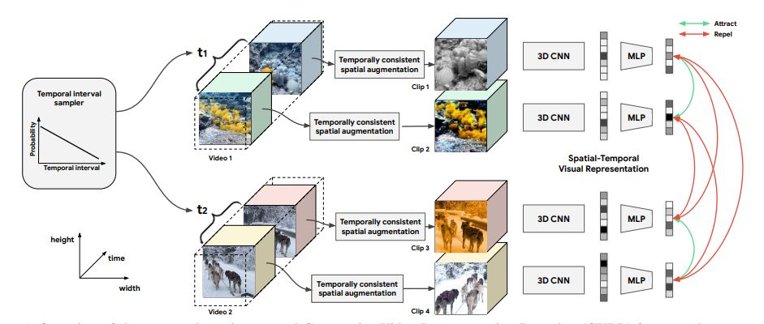

This technique applies temporally coherent strong
spatial augmentations to the input video. The contrastive
framework brings closer the clips from same video and
repels the clip from another video. With no labels attached,
the network learns to cluster the videos of same class but
with different visual content.
More details can be found
here.

Overview of the proposed spatiotemporal Contrastive Video Representation Learning (CVRL) framework. From a raw video, a temporal interval is first sampled from a monotonically decreasing distribution. The temporal interval represents the number of
frames between the start points of two clips, and two clips are sampled from a video according to this interval. Afterwards temporally consistent spatial augmentation is applied to each of the clips and feed them into a 3D backbone with an MLP head. The contrastive loss
is used to train the network to attract the clips from the same video and repel the clips from different videos in the embedding space.